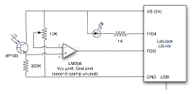

Table of Contents:
VideoLat is a tool to help you analyse video delays, mainly aimed at conferencing applications. Basically, it works by generating a barcode on-screen and then measuring how long it takes until that same barcode is detected by the camera. This method of measurement also takes into account delays caused by camera, grabber hardware, video output card and the video display.
VideoLat can take round-trip measurements, with the same system both benerating and detecting the barcodes. A future release will also allow asymetric measurements, using a videoLat-system on both ends.
If you have access to the internals of the system-under-test it is possible to take measurements there as well, because videoLat encodes the current timestamp in the barcode.
Because the camera of the system under test needs to see the videoLat screen and vice versa it may be best to get a separate USB camera attached to the videoLat system, using the builtin iSight may make it difficult to adjust things.
Binary installers and source code can be downloaded via videolat.sourceforge.net. The binary can be run in-place, no need to install it. To build from source, see the README.txt file included in the source distribution.
If you want to use a USB camera, connect it before starting videoLat. Same for an external display.
You probably want to disable screen dimming, in System Preferences -> Energy Saver.
To be able to interpret the numbers you should first measure the test harness, the computer running videoLat, itself. As you will want to subtract these measurements from your real measurements later, it is a good idea that you invest some time here to create a setup that gives you a normal (bell-curve) distribution of the delay times measured. This makes it easier to detect anomalies in the distribution of your real measurements.
If you use a USB cam you simply point it at the screen, if you use the iSight you will have to use a mirror and set the mirror view flag. If you have a macBook it may be advisable to use an external screen: the timing of the builtin screen seems to be funny, giving a non-normal distribution. Connect camera and screen before running videoLat.
If you want to change the output filename you must do so now, before starting the measurements. You also want to select the Summarize checkbox to compute mean, variance and delay distribution. Set Role to Both, check in the Input window that the camera has a reasonably undistorted view of the output window. Press Run to start the measurements. You should see the number of detected barcodes in the Found: field. If it remains at "0 of nnnn" things are not working.
You want to take a lot of measurements, especially if your display frequency is close to your camera frequency. At around 500 the distribution seems to start looking like a normal distribution for me, but YMMV.
When you quit, the results are saved and postprocessed. If you have requested the Summary and you have iWork Numbers installed the results are opened automatically, otherwise you will find a file named measurements-summary.csv right beside your Mmeasurements.csv file. This file contains the count/min/max/mean/stddev of the measurements and their distribution.
The raw output file consists of lines of the form:
timestamp,event,subevent,event-data,extra-info
For barcode generation and detection, event-data is the string encoded in the barcode, so you can match up generation and detection timestamps using this field. The extra-info may contain the measured overhead for creating and detecting the barcodes, this overhead should be subtracted from the delays.
The easiest real measurements to take are single-ended measurements, where a single test system running videoLat does both generation and reception. In this setup, you do not have to cater for system clock differences between sender and receiver. To use single-ended mesurements to measure delays over the net you setup the remote videoconferencing system so that its camera can see its own screen. If you need to use a mirror for this you set the mirror view checkbox.
The real measurement follows the same pattern as for the self-measurement, it is assumed you understand how to point the respective cameras at the screens.
Single-ended operation of a remote system will measure the round-trip delay, so you will need the divide the numbers by two, and this is assumying that your setup is symmetric (same hardware on both sides, symmetric network connection).
Asymmetric measurement is not practical yet in this release.
For asymmetric measurements you use two videoLat systems, one on the sending side and one on the receiving side. This means that the symmetric self-measurement is not good enough: you need to independently measure display latency (on the sending side) and capture latency (on the receiving side). videoLat can do these measurements if you first buy and build some hardware. Buy a LabJack U3, and build the following hardware:
LabJack suggest you connect the U3 to a USB 2.0 port on your computer for fastest response time.
.Use a bit of cardboard to fold a little tube around the phototransistor, so that it only picks up the light you want it to pick up. Eventually you will point the phototransistor at your screen, so you may want to rig something together to hold it there. Technical Lego, wood, cardboard, whatever works for you.
Next, you need to install the LabJack USB drivers (just 2 user libraries installed in /usr/local, no kernel drivers). Download them from the LabJack Linux and Mac OS X drivers page.
Once you have bought, built and installed all these prerequisites you should test them. Point the photodiode at the LED (with as little outside light as possible) and run videoLat with the following settings (set Measurement type to manual): datatype to Black/White, transmission off, reception off and coordination to LabJack USB hardware . This will turn the LED on, wait for light on the phototransistor, turn the LED off, wait for no light, etc.
You should expect to see a 2.5ms delay, with low standard deviation, possibly with a second peak around 3.5ms.
Asymmetric measurement is not practical yet in this release.
Display latency is now measured by attaching the phototransistor to the output screen and letting videoLat do black/white output measurements.
Capture latency is measured by pointing the camera at the LED, indicating the LED position in the self-view window and doing black/white input measurements.
Asymmetric measurement is not practical yet in this release.
VideoLat was written by Jack Jansen, Jack.Jansen@cwi.nl, and is copyright (c) 2010 Stichting Centrum Wiskunde & Informatica, Amsterdam, the Neterhlands. It is open source, licensed under the GNU General Public License (GPL).
VideoLat depends on the ZBar bar code reader, its included QR code reader and the Zint bar code generator. These tools are Copyright (c) Jeff Brown, Timothy B. Terriberry and "Robin", and licensed under LGPL and GPL.
The labjack Python driver and liblabjack are Copyright (c) 2010 LabJack corporation and under a BSD-like license. They use libusb which is licensed under LGPL.